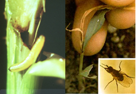
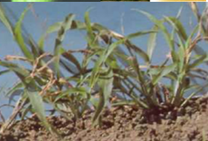
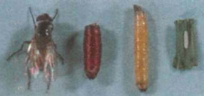

| Home |
| SORGHUM |
| 1. Sorghum Shootfly |
| 2. stem borer |
| 3. pink stem borer |
| 4. shoot bug |
| 5. earhead bug |
| 6. sorghum midge |
| 7. plant lice (Aphids) |
| 8. earhead web worm |
| 9. gram caterpiller |
| 10. plant bug |
| 11. stink bug |
| 12. mirid bug |
| 13. slug caterpiller |
| 14. Leaf roller |
| 15. flea beetle |
| 16. red hairy caterpiller |
| 17. semilooper |
| 18. weevils |
| 19. wingless grasshopper |
| Integrated Pest Management |
| Questions |
| Download Notes |
PESTS OF SORGHUM :: Major Pests :: Sorghum Shootfly
1.Sorghum Shootfly: Atherigona soccata (Muscidae: Diptera)
Distribution and status: Maharashtra, Andhra Pradesh, Tamil Nadu and Karnataka
Host range: Maize, ragi, bajra, rice, wheat and grasses
Damage symptoms: The maggot on hatching migrates to the upper surface of leaf and enters between the leaf sheath and stem. After reaching the soil level, the maggot bores inside the stem and cuts the growing point resulting in “dead heart” symptom. The infested plant produces side tillers. The attack is more severe during summer than kharif season |
 |  |
|
||

|
Bionomics: Adult, a whitish grey female fly lays white, cigar-shaped eggs on the lower surface of leaf blades mostly during morning hours. The egg is white, cylindrical, distal end somewhat flattened. The incubation period varies from 2-3 days. Maggot is dirty white and apodous. Mature larvae are yellow and about 6 mm long. The larval period is 8-10 days and has four larval instars. It pupates at the base of the stem or in soil for 8-10 days. The life cycle is completed in 17-21 days. |
ETL: 10% dead hearts or 1 egg / plant
Management
- Use resistant varieties like Co-1, CSH 15R, Maldandi and Hagari, M35-1, Swati, SPV 491, IS - 18551, 5566, 5285, 5613, ICSV 700, ICSV 705, Phule Yashoda, CSH 7, CSH 8
- Sow sorghum immediately at the onset of monsoon rains to minimise shootfly damage.
- Use higher seed rate (12.5 kg/ha) and remove the shoot fly damaged seedlings at the time of thinning or raise nursery and transplant only healthy seedlings.
- Pull out and destroy plants showing dead hearts at the time of thinning.
- Set up hanging type of plastic fishmeal trap @ 12/ha till the crop is 30 days old.
- Treat 100 kg seeds with chlorpyriphos 20 EC 400 ml or quinalphos 25 EC 400 ml or imidacloprid 48 FS 1.2 L or imidacloprid 70 WS 1.0 kg or thiomethoxam 30 FS 1.0 L
- Granular application of phorate 10 G or carbofuran 3 G to the furrow at the time of sowing at 2.5 kg a.i./ha.
- Spray endosulfan 35 EC @18 ml, dimethoate 30 EC @ 12 ml and methyl demeton 25 EC @12 ml for an area of 120 m2 nursery.